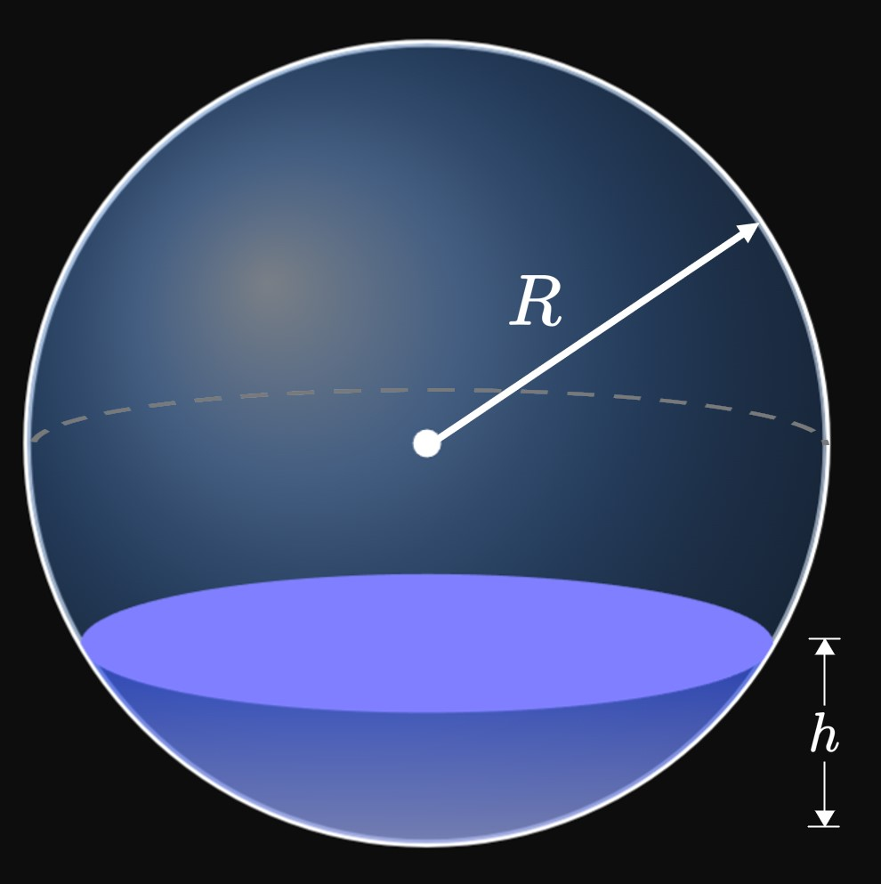

Click on a problem number to see its solution.
When do we use the Disk Method ,
and when do we use the Washer Method ?
For each of exercises 2–22, calculate the volume of the solid generated
by revolving the bounded region around the specified axis.
\(\ds y = \sqrt x \cmaa y = 0 \cmaa x = 16 \scoll \abtAxis{x}\)
\(\ds y = x - 4 \cmaa x = 0 \cmaa x = 2 \cmaa y = 0 \scoll \abtAxis{x}\)
\(\ds y = e^{-2x} \cmaa x = 0 \cmaa x = e \cmaa y = 0 \scoll \abtAxis{x}\)
\(\ds y = x^2 \cmaa y = 0 \cmaa y = 1 \cmaa x = -1 \cmaa x = 1 \scoll \abt{y = 1}\)
\(\ds y = \frac{1}{x} \cmaa x = 1 \cmaa x = 3 \cmaa y = -1 \scoll \abt{y = -1}\)
\(\ds y = x^2 \cmaa x = 0 \cmaa y = 0 \cmaa y = 8 \scoll \abtAxis y\)
\(\ds x = e^y \cmaa x = 0 \cmaa y = 1 \cmaa y = 2 \scoll \abtAxis y\)
\(\ds y = e^x \cmaa y = 0 \cmaa x = 0 \cmaa x = 1 \scoll \abt{y = -1}\)
\(\ds y = x^2 \cmaa y = x \cmaa x = 0 \cmaa y = 0 \scoll \abt{y = 1}\)
\(\ds y = -\sqrt{4 - x} \cmaa x = 4 - y \cmaa y = 0 \scoll \abtAxis{y}\)
\(\ds x = -y^2 \cmaa x = -1 \scoll \abt{x = -1}\)
\(\ds y = e^x \cmaa y = e^{-x} \cmaa y = 0 \cmaa x = -1 \cma x = 1 \scoll \abtAxis{x}\)
\(\ds y = x^2 \cmaa y = 4 - x^2 \scoll \abt{y = -1}\)
\(\ds y = \sqrt{x - 1} \cmaa x = 0 \cmaa y = 4 \scoll \abt{x = -3}\)
\(\ds y = x^2 \cmaa y = 3 - 2x \cmaa y = 0 \scoll \abtAxis{x}\)
\(\ds y = \sqrt x \cmaa x = \sqrt y \cmaa x = 1 \scoll \abt{x = -1}\)
\(\ds x = 5 - y \cmaa y = x + 1 \cmaa y = 1 \scoll \abt{x = -2}\)
\(\ds y = 2 - x \cmaa y = \sqrt x \cmaa y = 0 \scoll \abtAxis{x}\)
\(\ds y = 1 - x^2 \cmaa y = -2 \scoll \abt{y = 3}\)
\(\ds y = 1 + x^2 \cmaa x = 2 \cmaa y = 1 \scoll \abtAxis{y}\)
\(\ds y = \sin x \cmaa y = \cos x \cmaa x = 0 \cmaa x = \frac{\pi}{4} \scoll \abt{y = -1}\)
Using the Disk Method, prove that a right cone of base \(h\) and radius \(r\)
has volume
\[V = \tfrac{1}{3} \pi r^2 h \pd\]
In a sphere of radius \(R,\)
find the volume of the bottom cap of height \(h\)
(Figure 18 ).

The edge of a bowl is a parabola.
The top of the bowl is a circle of diameter \(8\) inches,
and its height is \(6\) inches.
Soup is poured into the bowl to reach a liquid level of \(2\) inches
above the base.
Calculate the volume of soup added.